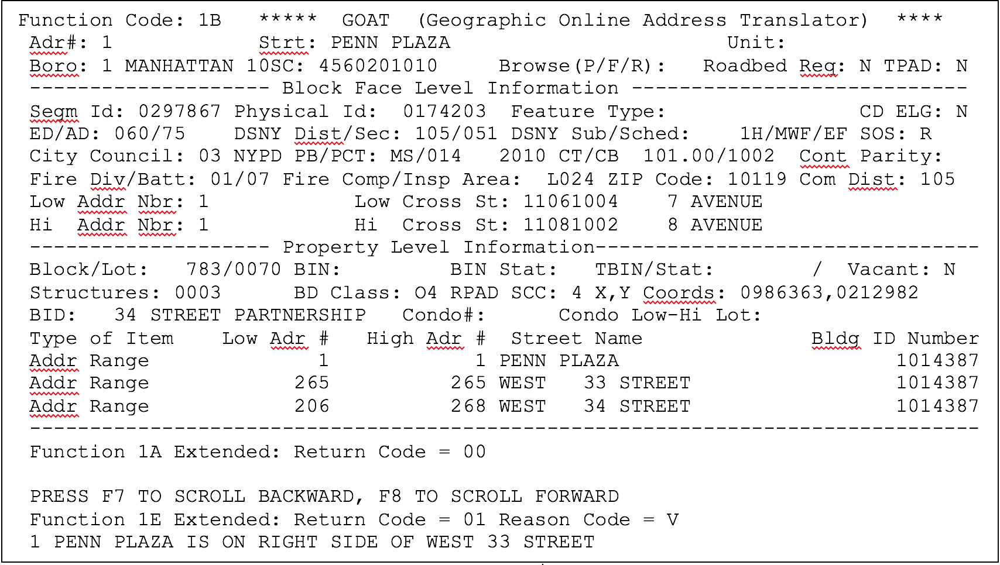

V.5 Output Data Returned in Work Area 2 of Address Processing Functions
The address-processing functions differ significantly with respect to the output data they return.
Function 1
Function 1, when called using two work areas, performs blockface-level processing. Almost all of the items that Function 1 returns in WA2 are associated with the entire blockface, and do not vary with the specific input address within that blockface. Among these items is a set of geographic district identifiers, such as Census Tract and Block, Police Precinct and Community District.
One piece of information returned by Function 1 that does vary with the specific input address is a pair of spatial coordinates. This identifies the approximate location of the given address on the earth’s surface.
School District (SD) boundaries split some blockfaces, and in those cases, Function 1 returns the SD value that is appropriate for the specific input address. However, the high and low house numbers returned in WA2 always correspond to the entire blockface, not to the portion of the blockface within the given SD. When the blockface is split by a SD boundary, no indication is provided that the blockface is split.
An example of a blockface that is split by a SD boundary is the odd-address side of FARRAGUT ROAD in Brooklyn between EAST 105 STREET and EAST 108 STREET. The address range for the entire blockface is 10501 to 10799. The subrange from 10501 to 10599 is in SD 18; and the subrange from 10601 to 10799 is in SD 19. If the input to a Function 1 call is 10559 FARRAGUT ROAD, ‘18’ is returned in the WA2 SD field, but 10501 and 10799 are returned as the address range for the blockface. If the input to a Function 1 call is 10611 FARRAGUT ROAD, ‘19’ is returned in the WA2 SD field, but, again, 10501 and 10799 are returned as the address range for the blockface.
The information that regular Function 1 returns in WA2 also includes two lists of street codes for the cross streets at both ends of the blockface. These cross street codes are B5SCs thus reflecting the primary street names. The Extended WA2 (MODE=X) also returns B7SC lists of cross streets and their street names thus reflecting the principal street names. Applications can use these cross streets to identify address-based data to blockfaces or street segments. In many applications, the consolidation of data for individual locations to the level of the blockface or street segment can significantly improve the efficiency of a municipal operation. The conversion of address-based data to segment-based data is further discussed in Chapter VII.3.
If a COW application has a need to display the street names of the cross streets,aside from calling Function D or DG, the user can employ one of the following options:
a. The Mode Switch in WA1 can be set to ‘X’ and the Extended function will return cross street codes as B7SCs and their corresponding principal street names in the extended portion of WA2. This is done with no processing overhead. This can be helpful to the user since the Primary Name is not always the best name for a particular cross street. See description of Extended Mode in Chapter II.7)
b. The Cross Street Names Flag in WA1 can be set to ‘E’ and the cross street names will be returned in the List of Street Names in WA1 (see entries for Cross Street Names Flag and List of Street Names in Appendix 3). The Cross Street Names will be the primary street names since they are based on B5SCs. Note that the cross street names feature incurs processing overhead, and should only be used when necessary,. It is recommended that the Extended Mode option, mentioned above, be used.
NOTE: There is no longer a need to set the Cross Street Names Flag to “E” when using Function 1 and 1E with Mode Switch of “X”, since the Cross Street Names are in the Extended part of the work area, although this will not create an error if the Cross Street Names flag is set to “E”. However, the Street Names returned in Work Area 1 with the Cross Street Name flag are based on the B5SCs and not the updated B7SCs.
Function 1 and 1E Extended Work Areas - MODE=X (COW Only)
In the Extended Function 1 and 1E work area 2, the BOE Preferred LGC and associated street name will be returned in new fields that are defined in the “Extended” portion of Work Area 2.
The Extended Function 1 and 1E work area 2 includes additional fields such as USPS Preferred City Name, Latitude and Longitude, Neighborhood Tabulation Area Name, Bike Lane 2, Bike Traffic Direction, Street Width, Street Width Maximum, Speed Limit, etc. For a complete list, see the Work Area layout in Appendix 13.
Underlying Street Name or Street Address
For NAPs and Addressable Place Names, the underlying street name or street address is returned as part of a warning message (reason code V). The street code of the underlying true street is not included in the list of cross streets. For example, Fifth Avenue is an underlying street of the Empire State Building; it will not be included in the list of cross streets for the Empire State Building. Information on the underlying true street appears in COW WA2 and MSW Long WA2.
Additional data in COW regular WA2 and in long WA2 for MSW Functions 1 and 1E
The long WA2 option is available for the MSW Functions 1 and 1E. Since all the additional data in the long WA2 for MSW Functions 1 and 1E are included in the regular WA2 for COW Functions 1 and 1E, there is no long WA2 option for COW. (There are extended work areas for COW Function 1/1E which are discussed below.) The additional data in COW regular WA2 and long MSW WA2 includes the following:
- Segment ID
- Borough and 7-digit street code for the underlying true street of a NAP or Addressable Place Name
- Underlying house number
- 2000 Census tract, block, and block suffix. (The 2010 fields are in the regular portion of the work area.)
- (COW only) Hurricane Evacuation Zone
- (COW Only) Organics Recycling Schedule
- (COW Only) Bulk Items Pickup Schedule
Functions 1, 1B, and 1E allow a user to receive roadbed-specific information in place of information based upon the generic center line of a multi-roadbed street. A user requests roadbed-specific information via the ‘Roadbed Request Switch’. This means that a Function 1, 1B, or 1E call with this switch set will return the roadbed-specific geocodes, assuming that the input street has multiple roadbeds. Examples of geocodes that would be different include Segment ID, Segment Type Code, X-Y coordinates, LION Key and possibly cross streets and Census Tracts / Blocks. An additional file has been added to the Geosupport system to handle this data. Users who prefer non-roadbed-specific information, which assumes a single roadbed for all roads, are not required to make any changes.
Function 1E
Function 1E, when called using two work areas, returns all of the WA2 data items that Function 1 returns. In addition, Function 1E returns the following political district identifiers in WA2: Election District, State Assembly and Senate Districts, City Council District, Congressional District and Municipal Court District.
Function 1E handles cases where a School District boundary splits a blockface in the same manner as Function 1 does. In addition, Election District boundaries can also split blockfaces, and Function 1E handles those cases similarly. This includes the special case of the addresses 3333A through 3333E Broadway discussed in Chapter V.6.
As indicated above, Function 1E permits roadbed-specific information to be returned to the user. For more information, refer to the description as part of Function 1.
COW Function 1/1E Extended Mode - Mode Switch set to “X”. Geosupport has an Extended Work Area 2 for COW Functions 1 and 1E called Function 1 and 1E Extended. The first 300 bytes of Function 1 and 1E with the Mode Switch set to “X” will be the same as regular Function 1 and 1E calls. Note: Please see Appendix 13 for the Extended Work Area 2 layout. Some of the fields in the extended portion of the Function 1/1E Work Areas include: USPS Preferred City Name, NTA Name, Latitude, and Longitude.
Note: There is no longer a need to set the Cross Street Names Flag to “E” when using Function 1 and 1E with Mode Switch “X”, since the Cross Street Names are in the Extended part of Work Area 2, although this will not create an error if the field is set to “E”. However, the Street Names returned in Work Area 1 with the Cross Street Names flag are based on the B5SCs (thus returning the primary street names) and not based on the updated B7SCs which allow the Extended Work Area 2 to return the principal street names.
Function 1A
Function 1A, when called using two work areas, performs property (i.e., tax lot) and building-level processing. Function 1A returns information in WA2 associated with the specific property and building (if any) containing the input address. This information includes the property identifiers (tax block and tax lot numbers), and a list of all addresses of all buildings on the property (or as many as will fit in WA2) as well as the Building Identification Numbers (BINs) if any. Function 1A’s output information is discussed in detail in Chapter VI.6.
Function 1A Extended Work Area 2 (Mode Switch set to ‘X’) – COW Only. The first 246 bytes of the Extended Work Area 2 for Function 1A, up to the “Number of Entries in List of Geographic Identifiers” field, are the same as with regular Work Area 2. Aside from adding the new Function 1A Reason Code, Warning Code, GRC and filler to the work area for Function 1A Extended, the only change is in the address list. The Principal Street Name (based on the B7SC in the address list) has been added to each element in the address list for the user’s convenience. Note that Mode Switch of ‘X’ is not valid with the Long Work Area 2 Flag set to Y, since the Function 1A Long Work Area 2 primarily returns BINs, not street codes.
Function AP (COW Only)
Function AP, when called using two work areas, performs Address Point processing and some property-level and building-level processing. Function AP returns the Address Point ID and the X,Y spatial coordinates of the Address Point. In addition, Function AP returns the Borough-Block-Lot of the Address Point and its BIN. The tax-lot information in WA2 lists only one address in the lot, namely, the input address with the BIN number (if an) of the building at that address. Function AP’s property output information is very similar to Function 1A’s output. Function AP and Function 1A’s output information is discussed in detail in Chapter VI.10 and Chapter VI.6.
Function AP Extended Work Area 2 (Mode Switch set to ‘X’) – COW Only. The first 246 bytes of the Extended Work Area 2 for Function AP, up to the “Number of Entries in List of Geographic Identifiers” field, are the same as with regular Work Area 2. Aside from adding Function AP Reason Code, Warning Code, GRC and filler to the work area 2 for Function AP Extended, the only change is in the address list. The Principal Street Name (based on the B7SC in the address list) has been added to each element in the address list for the user’s convenience.
Function 1B (COW Only)
Function 1B returns Blockface-level information and political geography, followed by property-level information for a given input. Work Area 2 consists of the output of a Function 1E call with Mode Switch = “X” followed by the output of a Function 1A call with Mode Switch = “X”. The input requires borough or zip code, address number if needed, and street name or street code. Function 1B processing first retrieves the property-level information (Function 1A Extended- tax lot and building) based on the input. The Function 1A Extended processing may modify the input address (e.g. a hyphen is inserted into the address number). In any case, the input address used by Function 1A Extended is then used to retrieve the blockface and political data (Function 1E Extended).
Function 1B (combined Function 1E Extended and 1A Extended) returns a total of 4300 bytes in Work Area 2. The first 1500 are for the Blockface portion (Function 1E, see description above) of the call. The next 2800 bytes are for the Property Level portion (Function 1A, see description above and Chapter VI.6) of the call.
A second set of Geosupport Return Code (GRC), Reason Code and Error/Warning Message fields is defined in Work Area 1 to be used for Function 1B. This new set contains the GRC, Reason Code and Error or Warning Message for the Function 1A Extended portion of the Function 1B call. The original GRC, Reason Code and Message fields in Work Area 1 contain the Return Code, Reason Code and Error or Warning Message from the Function 1E Extended portion of the Function 1B call. It is entirely possible that Geosupport will find one set of information and not find the other. There can be an error code and message in the new GRC and Message fields indicating property data (Function 1A) has not been found, and a 00 or 01 GRC in the original Return Code field indicating Blockface (Function 1E) information has been found or just the opposite.
Work Area 2 for Function 1B
Function 1B returns a total of 4300 bytes in Work Area 2. The first 1500 are for the Blockface (Function 1E Extended) portion of the call. The next 2800 bytes are for the Property Level (1A Extended) portion of the call.
In the Function 1B Work Area 2, the Function 1E Extended WA2 output portion includes all the Function 1E Extended fields. There is one difference, namely that the preferred LGC that is returned in the Function 1B Work Area 2 is the DCP preferred LGC, not the Board of Elections preferred LGC.
A new Return Code and Reason Code field are defined in Work Area 2 for each of the 1E Extended and 1A Extended portions of the 1B call. This information duplicates the original and secondary Return Code and Reason Codes in Work Area 1. GBAT does not return a Work Area 1 and therefore does not return both Return Code fields. In order to make it easier for the GBAT user to see the results for both components of the 1B call, Work Area 2 contains a Return Code and Reason Code for each portion (1E and 1A). If data is found, either in the Blockface (Function 1E) call or the Property Level (Function 1A) call, that data will be returned to the user along with both Return Codes and Reason Codes.
If data has been found for the Blockface (1E) portion of the call, there will be data in columns 1 through 1500 of Work Area 2 returned to the user. Columns 1005-1006 will contain the GRC for the 1E portion of the call (which will be either a “00” or “01” indicating a warning) and column 1001 will contain the Reason Code if there is a warning. If data has not been found for the Blockface (1E) portion of the call, columns 1 through 1500 will be blank aside from the Error GRC in column 1005-1006 and the Error Reason Code, if any, in column 1001.
If data has been found for the Property Level (1A) portion of the call, there will be data in columns 1501-4300 of Work Area 2. Columns 1751-1752 will contain the GRC for the 1A portion of the call (which will be either a “00” or a “01” indicating a warning) and column 1747 will contain the Reason Code if there is a warning. If data has not been found for the Property Level (1A) portion of the call, columns 1501-4300 will be blank aside from the Error GRC in column 1751-1752 and the Error Reason Code, if any, in column 1747.
If data has not been found for either the Blockface or Property Level request, Function 1B’s Work Area 2 will be returned to the user with all fields blank aside from the two GRC and Reason Code fields mentioned above.
V.5.1 Mainframe GOAT Screen for Function 1B
In order to make room for more information, the Function 1B GOAT screen is formatted somewhat differently from the other GOAT screens. Since this new screen has many changes we are making an exception and describing it in the UPG.
a.There is only one field for the address number (Adr #:) and street name (Strt:). The same field is now used for the user’s input and the normalized output.
b. The screen is basically divided into two halves – with the top half giving Blockface Level Information (Function 1E) and the bottom half giving Property Level Information (Function 1A).
c. Two Return Code and Message Areas are displayed at the bottom of the screen. The first message area will reflect the Property Level portion and the second message area will reflect the Blockface and Political Level portion.
d. The Function Code input field is at the very top of the screen (Function Code:). The same field is used to display ‘1B’ and to allow the user to transfer to another function.
e. The Unit input field is at the very top of the screen (Unit:). The same field is used to return the normalized unit display format output.
